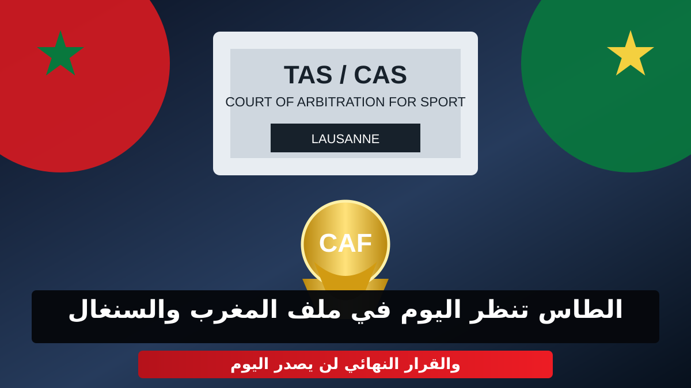

الطاس تنظر اليوم في ملف المغرب والسنغال.. والقرار النهائي لن يصدر اليوم

تتجه الأنظار اليوم الخميس 8 أكتوبر 2026 إلى مدينة لوزان السويسرية، حيث تعقد محكمة التحكيم الرياضي «الطاس» جلسة الاستماع الخاصة بالطعن الذي تقدم به الاتحاد السنغالي لكرة القدم ضد الكونفدرالية الإفريقية لكرة القدم والجامعة الملكية المغربية لكرة القدم، في الملف المرتبط بنهائي كأس أمم إفريقيا 2025.
جلسة مغلقة في لوزان
وبحسب المعطيات التي أعلنتها المحكمة، تنعقد الجلسة حضورياً بمقر الطاس في لوزان، ابتداءً من الساعة التاسعة والنصف صباحاً، ومن المنتظر أن تستمر إلى فترة ما بعد الظهر. وستجرى الجلسة خلف أبواب مغلقة، بعدما لم تطلب الأطراف المعنية جعلها علنية.
ويحضر ممثلون عن الاتحاد السنغالي والجامعة الملكية المغربية لكرة القدم، فيما تمثل الكونفدرالية الإفريقية لكرة القدم بواسطة مستشاريها.
القرار النهائي لن يصدر اليوم
أكدت محكمة التحكيم الرياضي أن الهيئة التحكيمية ستبدأ مداولاتها بعد انتهاء جلسة الاستماع، لكنها لن تصدر القرار النهائي في اليوم نفسه. كما لم تحدد المحكمة إلى حدود الآن موعداً رسمياً للنطق بالحكم.
خلفية الملف
تعود القضية إلى نهائي كأس أمم إفريقيا 2025 بين المغرب والسنغال، والذي شهد أحداثاً أثارت جدلاً واسعاً. وبعد قرار لجنة الاستئناف التابعة للكاف باعتبار السنغال خاسراً بالانسحاب ومنح المغرب نتيجة 3-0، تقدم الاتحاد السنغالي باستئناف أمام الطاس مطالباً بإلغاء القرار وإعادة النظر في نتيجة النهائي.
وتشكل جلسة اليوم محطة جديدة في هذا الملف، بينما تترقب الجماهير المغربية والسنغالية ما ستسفر عنه المداولات والقرار النهائي في وقت لاحق.